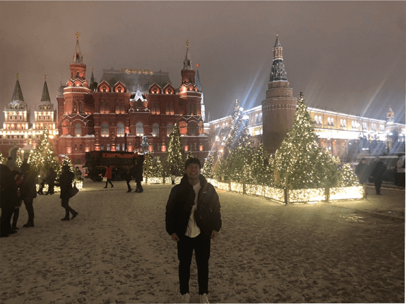
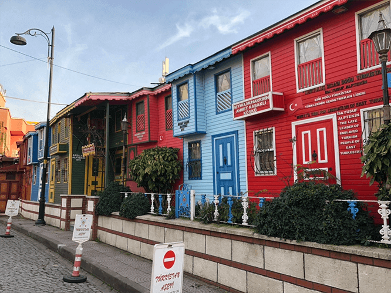
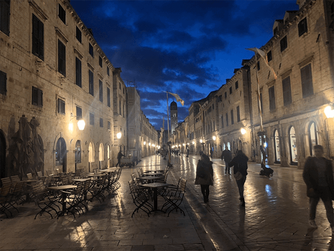
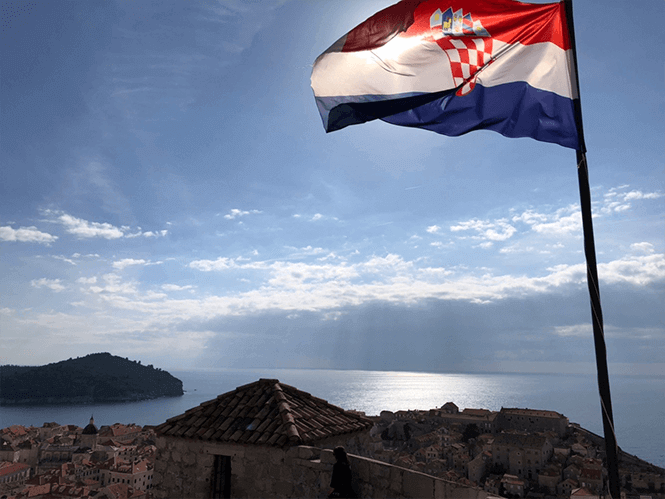
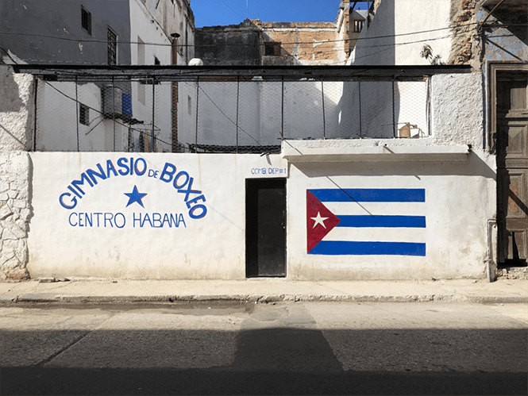
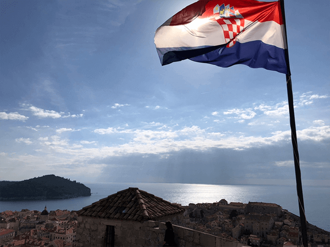
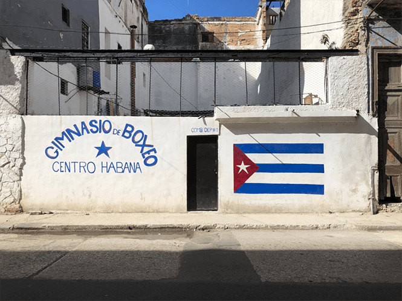
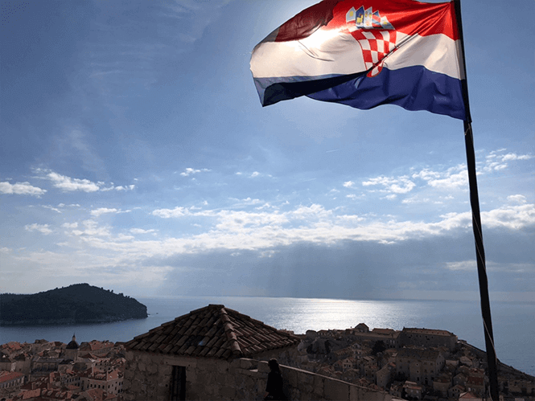
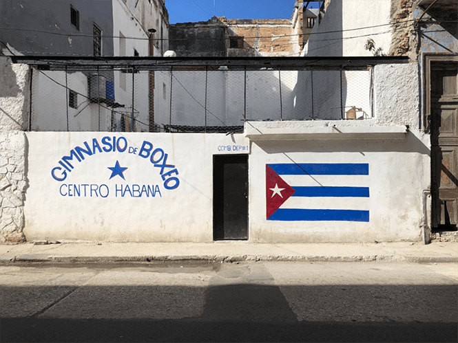

国内：４５都道府県制覇
残り佐賀県・長崎県
海外：８カ国１３都市アメリカ・ロシア・トルコ・ボスニア・クロアチア・チェコ・スペイン・キューバ
my profile
１９９６年 千葉県船橋市生まれ
２０１５年 明治大学 法学部入学
２０１９年 同大学 卒業
２０１９年~ 特別区 就職
２０２０年~ 現状に危機感
→副業に興味を持つ
→プログラミングを学習中
趣味
旅行
スキル
HTML&CSS
photoshop
お客様一人一人に最適なサイトを提供いたします。よりスキルを身に付けるためにjavascript・ wordpressも学習中。
sns
facebook, twitterで日々あったことを投稿しています。
作品
works
フォトギャラリー
photogarally



 




